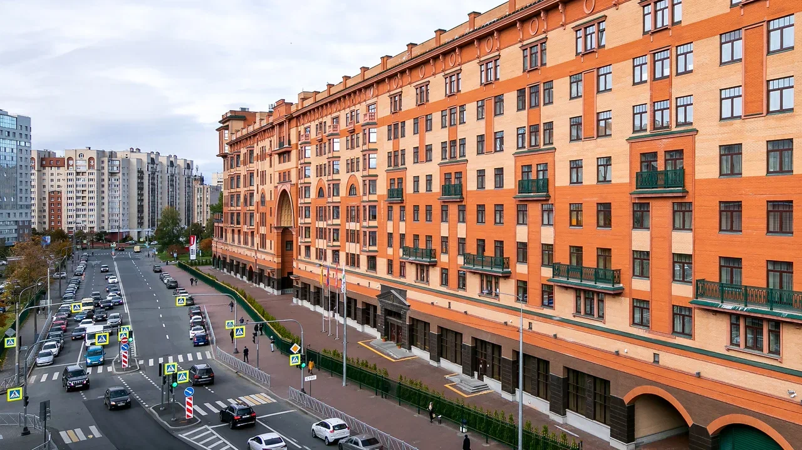
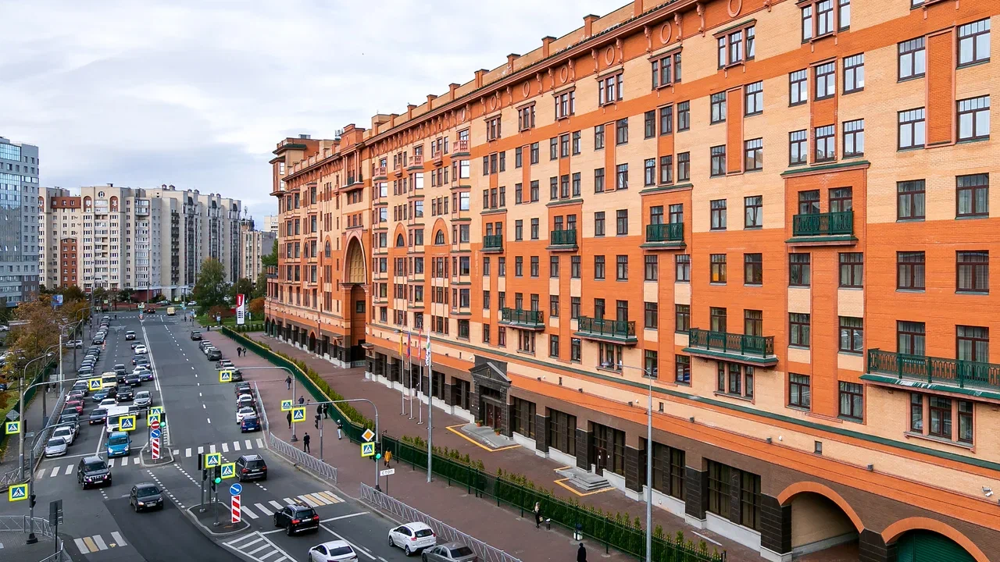

Условия участия
Общие сведения
Конференция проходит в форме научных докладов.
Рабочий язык: русский и английский.
Участники конференции: преподаватели, аспиранты, магистранты, студенты Санкт-Петербургского горного университета и университетов России и других стран, представители компаний.
Условия участия
Желающим принять участие в конференции необходимо в срок до 09.01.2024 г. пройти регистрацию на сайте конференции, заполнив регистрационную форму и предоставив тезисы доклада, оформленные в соответствии с требованиями.
К тезисам в обязательном порядке должны быть приложены экспертные заключения о возможности опубликования, полученные в организации, представители которой является авторы.
Важно!
На материалы докладов, рекомендованных для публикации, должны быть оформлены экспертные заключения Университета.
Регламент прохождения экспертного контроля в Горном университете и шаблоны документов размещены в Личном кабинете: clck.ru/3D55UN.
Оригинальность материалов должна быть не менее 70% (обязательное предоставление справки о проверке оригинальности).
В случае если с одним докладом выступает несколько участников, регистрацию на сайте конференции должен пройти каждый соавтор отдельно.
Место проведения
Санкт-Петербург, основанный в 1703 году Петром I, является одним из красивейших городов мира и по праву считается культурной столицей России. Помимо богатого культурного наследия город является одним из крупнейших научно-образовательных центров России, где ежегодно проходит обучение около 400 тысяч студентов и аспирантов, что по праву закрепило за Санкт-Петербургом статус студенческой столицы России.
Санкт-Петербургский горный университет императрицы Екатерины II сегодня является ведущим высшим политехническим учебным заведением, осуществляющим подготовку высококвалифицированных инженерных кадров по всем специальностям, необходимым для обеспечения работы минерально-сырьевого комплекса России – от поиска и разведки полезных ископаемых до получения конечного продукта.

 


Контакты
Место проведения
Санкт-Петербургский горный университет императрицы Екатерины II

Россия, 199106, г. Санкт-Петербург, Васильевский остров, 21-я линия, д. 2, ауд. 1205 УЦ№1. Кафедра землеустройства и кадастров

+7 (812) 322-29-23
+7 (812) 321-54-36

Организационный комитет
+7 (812) 328-84-96